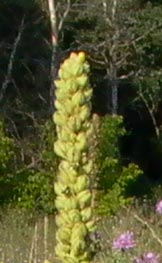
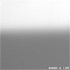
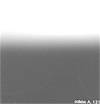
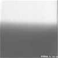
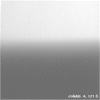
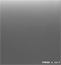
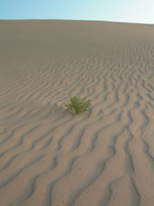

Некоторые практические приёмы съёмки пейзажа
Введение
Споры о том, что лучше, плёнка или цифра, не прекращаются уже много лет. Однако нам-то с Вами известно, что при грамотном использовании хорошо и то, и другое. Поэтому пока одни спорят, мы займёмся практикой. В данной статье рассматриваются некоторые наиболее важные аспекты при съёмке пейзажей на незеркальные цифровые фотоаппараты с несменными объективами, то есть на так называемые "цифровые мыльницы". Эти фотоаппараты получили наибольшее распространение среди современных любителей, по сравнению с другими, более функционально-насыщенными, цифровыми зеркальными фотоаппаратами. Тем не менее, автор не видит никаких преград, которые могли бы помешать Вам снять прекрасный пейзаж, даже если у Вас нет такой зеркалки; всё, как говорится, в Ваших руках. Автор постарался как можно более подробно рассказать о всех подводных камнях, которые Вас ждут при съёмке пейзажа, проиллюстрировав все положения наглядными примерами.
Прежде чем приступить непосредственно к изложению материала, я хотел бы сказать о цели данной статьи. Автор не ставит перед собой цель научить Вас снимать гениальные полотна; данная статья преследует цель помочь Вам сделать качественно выполненный пейзаж. Тут рассматриваются вопросы цветности, глубины резкости, освещения, зернистости и чёткости. Выбор сюжета и композиции является делом самого фотографа и лежит в плоскости Вашего творческого замысла. Более того, быть может, будет полезным поэкспериментировать со многими положениями данной статьи, ознакомившись с ними, и сделав всё наоборот. Например, принято считать, что цифровой шум - это всегда плохо. Вместе с тем, Вам известно множество просто отличных пейзажей, обладающих этим "недостатком", но выглядящих при этом гармонично. Более того, в ряде случаев зерно, плёночный аналог цифрового шума, играет ключевую роль в изобразительном языке фотографии, и без него конкретное изображение потеряло бы свою очаровательность. То же самое можно сказать и про резкость, про цветовой баланс и про все остальные положения, которые обычно не подвергаются сомнению. Все эти положения можно и нужно нарушать в поисках своего пути, но делать это следует обдуманно и с пониманием. А для этого нам для начала следует научиться снимать добротные, качественные пейзажи, которые будут радовать наших родственников, посетителей наших страничек на фотосайтах, и, если повезёт, то и редакторов журналов. А уж потом мы пойдём дальше.
Весь изложенный материал автор разбил на четыре раздела: в первой части речь пойдёт про вопросы, связанные со светом, во второй - с цветом, в третьей мы поговорим обо всём, что связано с резкостью и чёткостью, а в заключительной главе остановимся на цифровой обработке полученных снимков на компьютере.
Глава I. Свет
Приёмником светового излучения в цифровом фотоаппарате является матрица. Какими же особенностями обладает эта так называемая "цифровая фотоплёнка"? Тут мне хотелось бы высказать пару соображений. Во-первых, в отличие от фотоплёнки, матрицы различных фотоаппаратов отличаются друг от друга по своим характеристикам. Даже в пределах линейки цифровых фотоаппаратов одного производителя будут отличия в свойствах матрицы. Поэтому точно назвать конкретные цифры не представляется возможным, например, нельзя с твёрдой уверенностью сказать, что динамический диапазон матрицы вашей фотокамеры, то есть характеристика, соответствующая фотографической широте фотоплёнки, равна, скажем, 2,2. Для одних матриц эта величина равна 1.5, для других – 2.3 , в то время как производители некоторых цифровых среднеформатных «задников» беззастенчиво утверждают, что она достигает значения 4-5 (а то и целых 7). Поэтому мы будем полагать, что матрица вашего фотоаппарата принадлежит к числу наиболее распространённых в настоящее время (по статистике проданных фотоаппаратов). Во-вторых, тут можно долго перечислять все характеристики "цифровой фотоплёнки", но мы не будем этого делать, оставив это компьютерным журналам. Вместо этого мы будем отталкиваться от конкретных нужд фотографов-пейзажистов и поговорим только о том, что нас непосредственно касается и понимание чего приведёт нас к получению более качественных снимков.
Чувствительность матрицы
Во-первых, "цифровая фотоплёнка" обладает показателем чувствительности к попадающему на неё освещению, точно так же, как и её "старшая сестра" - обычная фотоплёнка. Но, в отличие от фотоплёнки, величину чувствительности матрицы можно менять, во всех цифровых фотоаппаратах такая возможность имеется. Наилучшим с точки зрения цветности и чёткости Вашего снимка, будет как можно более низкая чувствительность: если в Вашем фотоаппарате есть возможность выставить её в 100 ISO - хорошо, а в 50 ISO - ещё лучше. Почему автор не рекомендует пользоваться более высокой чувствительностью? Хотя, в отличие от фотоплёнки, разрешающая способность матрицы не зависит от чувствительности, на которую она установлена, а раз и навсегда определяется её физическим строением, то есть количеством элементарных сенсоров на единицу её длины, но при этом матрица обладает другим неприятным свойством, которое как раз и проявляется при больших её чувствительностях: речь идёт о "шумах изображения", аналогах "зернистости" фотоплёнок. Любителей философии определённо должен заинтересовать тот факт, что каким бы носителем информации мы не пользовались, мы всегда будем наблюдать конфликт между пространством и временем: побеждая время, мы теряем элементы пространства, и наоборот. Но вернёмся к нашим баранам. Давайте посмотрим на эти иллюстрации. На фото 1 приведён некий пейзаж, взятый для нашего опыта (это часть бо́льшего кадра):
Теперь давайте посмотрим на наглядном примере, как проявляются шумы изображения, при различных величинах чувствительности матрицы. Я снял три одинаковых кадра, подобных Фото 1 со штатива, с чувствительностями в 100, 200 и 400 ISO. Вырезанные из них фрагменты (в размере образующих пикселей) приведены на Фото 2.:
|  | ||
| 100 ед. ISO | 200 ед. ISO | 400 ед. ISO |
Как это не парадоксально прозвучит, особенно важно придерживаться практики съёмки на низкочувствительную матрицу при съёмке в ночное время. Посмотрите на иллюстрации выше - шумы наиболее заметны на тёмном фоне, поэтому на фоне ночного неба Вашего снимка, снятого на высокочувствительную матрицу, будет так много цветных точечек, что Вы сможете снимать полярное сияние прямо из окна своего дома. Использование штатива выручит Вас в случаях, когда величина выдержки будет длиннее предельно-допустимой при съёмке с рук, равной примерно 1/30 сек. Использование высокой чувствительности матрицы оправдано только в светлое время суток и только для съёмок быстродвижущихся объектов. Для интересующихся сообщу, что величина уровня шума в полезном сигнале для чувствительности 100 единиц составляет примерно 10%, в то время как для чувствительности в 400единиц эта величина в 4 раза выше. Дело в том, что любая матрица имеет только одну номинальную чувствительность, а другие получаются применением коэффициентов усиления, которые усиливают не только чувствительность, но и шумы
Динамический диапазон

Другой характеристикой матрицы, которая нас непосредственно касается, является так называемый динамический диапазон, (D). На эту тему существует множество спекуляций, и все мои официальные и неофициальные попытки получить однозначный ответ на эту тему от производителей цифровой фотоаппаратуры, окончились ничем.
Давайте сделаем попытку разобраться. Как я уже сказал выше, динамический диапазон матрицы соответствует фотографической широте обычной фотоплёнки, то есть, это показатель способности передавать минимально-различимые детали в самых тёмных и самых светлых точках нашего снимка. Например, освещённость одного и того же предмета солнцем на улице в полдень и лампами накаливания в обычной квартире отличается в 10.000 раз, то есть на 4 порядка. Плёнка (либо матрица), способная передать подобный перепад освещённостей на одном кадре, должна обладать фотоширотой (или динамическим диапазоном) не менее 4D.
Как и фотоширота фотоплёнки, так и динамический диапазон матрицы находятся из характеристической кривой (см. график слева) как интервал десятичных логарифмов экспозиции, в пределах которого обеспечивается пропорциональная передача яркостей объекта съёмки (то есть, это длина линейного участка характеристической кривой).
Любительские фотоплёнки обладают фотоширотой около 4-5-х EV. Обратимые же плёнки, которые иногда ещё называют "слайдовыми", имеют эту величину, равную 1EV. То есть, если для негативных плёнок пропорциональный перепад яркостей равняется примерно десяти тысячам, то для слайда это отношение уже будет всего десять.
Плёнки плёнками, но какова же величина динамического диапазона матрицы нашей цифровой мыльницы? Как я уже сказал, вы не найдёте официальной информации от производителя на эту тему. Это обстоятельство как раз и создаёт благоприятную почву для слухов и спекуляций. Дело в том, что характеристические кривые цифровых матриц почти никогда не имеют прямолинейного участка, либо имеют его ничтожно малым. На этой почве появилась очень хитроумная методика определения динамического диапазона матрицы, как аналог полного интервала экспозиций. В отличие от фотошироты, этот интервал определяется уже не по величине линейного участка характеристической кривой, а по всей её длине, что выгодно увеличивает получившиеся значения динамического диапазона матрицы. В результате таких вот исследований, получают величины динамического диапазона порядка 2.2D..2.3D (к слову, при теоретическом пределе в 2.4D для 24-разрядных матриц). Матрица с динамическим диапазоном, равным 2.3D, способна правильно передать перепад освещённостей почти в 8 шагов экспозиции (если быть совсем точным – 7.7).
С другой стороны, если основываться на действительно прямолинейном участке характеристических кривых «мыльничных» матриц, там, где его существование «прощупывается», то выходит, что матрицы имеют динамический диапазон, начинающийся где-то от 1.2D. Это буквально означает, что характеристики матрицы такой фотокамеры близки к возможностям слайда, и она способна передать перепад освещённостей всего лишь 4 шага экспозиции. Хм, так 4 или 8?
Тут в самый раз полезно вспомнить, что критерием истины является практика, поэтому обратимся к практической экспонометрии. В Таблице 1 привожу результаты замера величины экспозиции (EV), для некоторых условий освещения, встречающихся в практике пейзажной съёмки.
Значения величин ev различных объектов съёмки в полдень
(в диапазоне чувствительности ISO 50 .. 400)
| Объект съёмки | 50 | 100 | 200 | 400 |
| Небо на юге | 16.2 | 17.2 | 18.2 | 19.2 |
| Небо на западе и востоке | 14.8 | 15.8 | 16.8 | 17.8 |
| Небо на севере | 13.7 | 14.7 | 15.7 | 16.7 |
| Облако на севере | 14.2 | 15.2 | 16.2 | 17.2 |
| Тень на светло-сером асфальте | 10.9 | 11.9 | 12.9 | 13.9 |
| Светло-серый асфальт | 14.2 | 15.2 | 16.2 | 17.2 |
| Лужайка, освещённая солнцем на юге | 13.1 | 14.1 | 15.1 | 16.1 |
| Лужайка, освещённая солнцем на севере | 13.0 | 14.0 | 15.0 | 16.0 |
| Лужайка, освещённая солнцем на западе и востоке | 12.4 | 13.4 | 14.4 | 15.4 |
| Трава в тени | 9.0 | 10.0 | 11.0 | 12.0 |
| Освещённая сторона опушки лиственного леса | 12.7 | 13.7 | 14.7 | 15.7 |
| Сторона опушки лиственного леса, находящаяся в тени | 10.5 | 11.5 | 12.5 | 13.5 |
(Все замеры произведены высокоточным спотметром Seconic-508, по отражённому свету, с углами замера 1-4 град., на географической широте 43град. в начале августа. Замеры яркости неба со стороны солнца производились в точке, расположенной посередине между солнцем и горизонтом.)
Если внимательно посмотреть в таблицу, и вспомнить, что мы имеем на практике, то становится очевидным, что никаким динамическим диапазоном 2.3D (то есть способностью передать перепад освещённостей в 7.7 ступеней), матрица нашей цифровой «малолитражки», скорее всего, не обладает. Так, к примеру, опушка леса, находящаяся в тени и солнечное небо над ней, снятые в летний полдень (разница всего в 5.7 ступеней экспозиции), никогда не протиснутся вместе в динамический диапазон матрицы: либо небо выйдет молочно-белым, либо лес получится антрацитно-чёрным. Мой опыт тестирования фотокамер этого класса показывает, что самое большое, на что практически способна матрица нашей мыльницы – это диапазон освещённостей, укладывающийся где-то в 5 - 6 EV (то есть, максимум 1.8D). Хотя теоретики, как мы видим, указывают нам другие цифры.
Но, чему бы там ни был равен динамический диапазон матрицы конкретно вашей камеры, с тех пор, как вы её приобрели, вопрос величины динамического диапазона отпал сам собой: теперь вам приходится довольствоваться тем, что у вас есть. Самое главное, что мы теперь знаем: поскольку матрицы цифровых мыльниц обладают существенно более узким динамическим диапазоном по сравнению с фотоширотой любительской плёнки, то это потребует от нас некоторых усилий для того, чтобы обнаружить неблагоприятную световую ситуацию (высокий контраст), и применить меры по преодолению возможных неприятностей.
Как обнаружить, что контраст сцены находится за пределами возможностей матрицы? Очень просто: это видно на ЖК-мониторе камеры при просмотре только что сделанного снимка перед его удалением. Выбеленные света, или чёрные, без деталей, тени, не устраняемые применением различных экспозиций, как раз и указывают на наличие этой проблемы куда убедительнее, чем различные спекуляции на тему величин динамического диапазона. Ещё лучше, если ваша камера показывает гистограмму отснятого изображения - по ней можно легко определить контраст. Если пересветы и глухие тени имеются, то нам надо что-то предпринять, чтобы уменьшить перепад яркостей между тенями и светами снимаемой сцены. Существует три основных приёма обойти узость динамического диапазона матрицы (не считая склеивания фрагментов разных кадров в Photoshop).
Первым приёмом является использование фотовспышки для подсветки переднего плана, если позволяют условия. Этот приём неприменим в нашем случае, поскольку мощность встроенной вспышки очень мала, и способна подсветить только то, что лежит в пределах 1,5-3 метра от точки съёмки. Покупать же мощную дополнительную вспышку для нашей "мыльницы" нецелесообразно, это сродни тому, как ставить колёса от «Мерседеса» на «Запорожец».
Поэтому там, где это не критично, рекомендуют пользоваться другим приёмом: определить, что для вас более важно на снимке, трава или небо, и снимать только этот объект, наведя фотоаппарат большей частью на него (при съёмке с автоматическим экспозамером), либо выставить вручную значения диафрагмы и выдержки в соответствии с яркостью выбранного главного объекта. При этом, большая часть снимка получится нормально-экспонированной. Я не отношусь к числу поклонников этого метода, поскольку хочу видеть на снимке то, что мне хочется видеть, а не то, что хочется видеть моей капризной камере.
Использование нейтрально-серых оттенённых фильтров
Оба перечисленных приёма обладают теми или иными недостатками, поэтому наиболее практичен третий приём - использование нейтрально-серых оттенённых (градуированных) фильтров. Поскольку почти все цифровые фотокамеры подобного класса не обладают специальной резьбой для крепления фильтров, Вам необходимо приобрести переходник. Многие уважающие себя фирмы - производители цифровых фотоаппаратов выпускают такие переходники, которые просто надеваются на объектив камеры. Альтернативой является переходник-держатель, выпускающийся фирмой Cokin (маркированный "А300") специально для цифровых мыльниц и изображённый на снимке справа закреплённым с фильтром на штативе (фотоаппарат не показан), комплект с которым (G350) стоит примерно 20$. Комплект, кроме самого переходника, включает в себя также два фильтра той же фирмы: дифракционный фильтр "Star 4" (A057) и оттенённый фильтр A198 оранжевого цвета "Sunset 2". Этот переходник крепится винтом к гнезду крепления для штатива внизу камеры и подходит ко всем камерам, у которых расстояние от винта до переднего обреза объектива не превышает 69мм. Замечу, что с этим переходником-держателем могут быть использованы только фильтры Cokin серии "A". В Москве фильтры этой серии продаются в магазине "Кинолюбитель" на Ленинском проспекте. С этим переходником Вы можете использовать почти все фильтры фирмы Cokin, номенклатура фильтров этой фирмы охватывает весь диапазон потребностей как любителя, так и профессионального фотографа. Более подробно про эти и все остальные фильтры Вы можете почитать мою статью "Светофильтры для пейзажной фотосъёмки". В крайнем случае, можно установить фотоаппарат на штатив и подержать фильтр перед ним рукой, либо сделать какое-то подобие держателя самому.
Фирма Cokin выпускает пять нейтрально-серых оттенённых фильтров. В Таблице 2 Вы видите сами фильтры и величины поправок, вносимую каждым из них. Речь идёт про степень поглощения света тёмной частью фильтра, светлая же часть не изменяет проходящий через неё свет. После установки фильтра экспонометр Вашей ненаглядной камеры сам рассчитает правильную экспозицию с учётом новой световой ситуации.
При использовании любого фильтра, который не накручивается непосредственно на объектив, следует прикрывать фильтр сбоку рукой, своей собственной тенью, или чем-то другим, с тем, чтобы отражения и блики не попали в объектив Вашей камеры. Также фильтры можно комбинировать, то есть использовать два вместо одного, переходик позволяет устанавливать до трёх фильтров одно временно. Но, скажу сразу, что подобные конструкции чреваты бликами и нарушением нормального баланса белого, так что всегда лучше использовать один фильтр вместо нескольких.
Значения поправок величин ev для семейства нейтрально-серых оттенённых фильтров фирмы "Cokin"
| Обозначение | Фильтр | Поправка |
| Cokin A 120 |  | -1,5 |
| Cokin A 121 |  | -3,0 |
| Cokin A 121M |  | -2.0 |
| Cokin A 121S |  | -3,2 |
| Cokin A 121F |  | -3.0 |
Из таблицы следует, что используя нейтрально-серые оттенённые фильтры, вы можете увеличить "пропускную способность" матрицы своего фотоаппарата на 3.2 единицы EV. И, поверьте мне, этого более, чем достаточно!
Как избавиться от белого неба
Давайте представим себе, что мы снимаем в полдень опушку лиственного леса в сторону севера на матрицу с чувствительностью 100единиц. Разница между яркостями неба на севере (14,7EV в Таблице 1) и освещённой солнцем опушки леса (13,7EV) составляет 1 ступень экспозиции, что вполне должно протиснуться в динамический диапазон любой, даже самой дешёвой, матрицы. Казалось бы, всё хорошо, но на практике мы получаем так называемое "цифровое" небо, то есть молочно-белое небо, свободное от каких-либо признаков цвета. В настоящее время эта проблема является основным бичом цифровой фотографии с использованием недорогих фотоаппаратов. Почему же так происходит?
Мнение о том, что узость динамического диапазона матрицы играет и тут основную роль, является ошибочным, а поэтому и широко распространённым. Посудите сами, при съёмках в пасмурную погоду, когда динамический диапазон сцены достаточно узок для того, чтобы успешно "пролезть" в матрицу, мы всё равно получаем белое, а не серое, небо.
Основной причиной этого неприятного эффекта является несимметричность границ допустимых отклонений от среднего значения экспозиции. Матрица не прощает переэкспозиции по причине нецентрального расположения точки среднесерого. Говоря другими словами, границы экспошироты матрицы имеют примерный вид [-1.5..+0.3], в отличие от любительских негативных фотоплёнок, с экспоширотой [-1...+3]. Таким образом, все те объекты, которые будут иметь яркость, на более чем полступени выше определённой экспонометрией камеры среднесерой точки, получатся белыми, даже если общая фотоширота сюжета не очень велика. Поэтому, чтобы избавиться раз и навсегда от "цифрового" неба вам стоит вводить поправку на экспозицию в -0,5EV. То есть слегка, на полступени, недоэкспонировать ваш снимок. Потом недоэкспонированные области фотографии можно будет слегка "подтянуть" кривыми в Photoshop (Ctrl-M), в то время как проделать обратное действие, воскресить цвет там, где его уже и cлед простыл вам не удастся. Также хорошей практикой является снимать небо с отдельно расположенными на нём белыми облаками: они "возьмут на себя" самый высокий уровень светлоты, оставляя небу более тёмные, глубокие тона, придадут интересный объём и нарушат информационную пустоту неба на вашем снимке. Если облака при этом потеряют объём, можно его им вернуть, применив уже знакомые нам нейтрально-серые оттенённые фильтры.
Что делать, если сцена слишком яркая?
Часто случаются ситуации, что выбранная Вами сцена съёмки имеет такую яркость, что даже при минимальной выдержке и минимальном отверстии диафрагмы (которая редко превышает 8) Вы не можете добиться того, чтобы экспонометр не "зашкаливал". Выходом из этой ситуации является применение нейтрально-серого фильтра. В отличие от нейтрально-серого градуированного фильтра, он целиком исполнен из тёмного стекла, а не наполовину. Фильтр NDx4 "поглотит" две единицы EV (а следовательно, позволит Вам увеличить выдержку или диафрагму на 2 полных шага), NDx6 - две с половиной, а фильтр NDx8 - три. Более подробно про экспозицию можно прочитать в моей же статье "Популярно про экспозицию при съёмке пейзажа".
Контраст
Некоторые любительские цифровые фотокамеры позволяют Вам менять величину контраста. На четвёртом фото Вы видите результаты попыток использования различных установок контрастности в цифровой камере.
 |  |  |
| Низкий контраст | Нормальный контраст | Повышенный контраст |
При съёмке нормально-контрастного пейзажа автор советовал бы использовать только нормальный контраст, то есть тот, что получает матрица, а не то, что выходит в результате алгоритмических преобразований. Выставлять контраст в повышенное значение - значит искусственно зажимать и без того узкий динамический диапазон матрицы. Что касается пониженного контраста - то, конечно, его можно использовать при съёмках в полдень, когда контраст сцены зашкаливает за все мыслимые пределы, но поступая так, всегда помните о том, что вам всё равно придётся возиться со снимком в Photoshop, где вы заодно можете выставить контраст именно так, как вам хочется, а не довольствоваться тем, что он будет понижен на строго-фиксированное значение. Относитесь к своему цифровому снимку, как к пиву: чем меньшее количество раз его переливают из ёмкости в ёмкость, тем дольше оно сохраняет свои живые свойства.
Глава II. Цвет → |